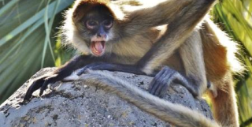

Here are the monkeys
Western Gorilla

The western gorilla is the most abundant species of the genus Gorilla. These animals may be greyish or brownish with a yellowish forehead. Gorillas are distinguished from eastern gorillas by their lighter color and their point on the nose. Males and females of this species have an average height of 155 cm and 135 cm respectively. Western gorillas live in groups of 2-20...
Read MoreWestern Lowland

One of the subspecies of the western gorilla, the western lowland gorilla inhabits lowland swamps, primary, secondary and mountain forests of Central Africa. The range of these gorillas covers the following countries: Angola, Republic of Congo, Central African Republic, Equatorial Guinea, Gabon, Cameroon and Democratic Republic of Congo. Although the small...
Read MoreCross River Gorilla

Another species of the western gorilla, the Cross River gorilla, is the most northerly and westerly living gorilla. Its range is very restricted and is found in the wooded hills and mountains on the border between Nigeria and Cameroon, near the sources of the Cross River. Only 250 individuals of this species survive from 2014, making Cross River Gorilla the rarest monkey in the world...
Read MoreEastern Gorilla

The eastern gorilla is the largest living primate inhabiting the subalpine and montane rainforests of Uganda, the Democratic Republic of Congo (DRC), Rwanda and the Albertine Rift forests. in eastern DRC. The primate is massive with a big head, a broad chest and long front legs. Gorillas have black fur and a breast, a face, feet and bald hands. Males of this species weigh about 140...
Read MoreMountain gorilla

The mountain gorilla is one of two subspecies of the eastern gorilla. There are two populations of mountain gorillas, one in the Virunga volcanic mountains in Central Africa and the other in the impenetrable Bwindi National Park in Uganda. Mountain gorillas are smaller and lighter than Grauer's gorillas. An adult man weighs between 140 kg and 205.5 kg. Only 880...
Read MoreEastern Lowland

Grauer's gorilla or Eastern Lowland gorilla is a subspecies of eastern gorilla that inhabit the DRC's mountainous forests. Significant populations of this subspecies of gorillas live in Maiko National Parks, Kahuzi-Biega National Parks, Usala Forest, Itombwe Massif and adjacent areas. Grauer's gorilla is the largest subspecies of gorilla and has a black coat like the mountain gorilla...
Read MoreThe champanzee

Another thing that makes chimpanzees and humans remarkable is our culture, or all the learned traditions, behaviors, and values passed through generations. Because primates learn from other members in their social groups, different geographical populations of chimpanzees and humans exhibit predispositions to different behaviors, making groups culturally distinct from...
Read MoreThe Gibbon

Gibbons are apes in the family Hylobatidae. The family historically contained one genus, but now is split into four genera and 18 species. Gibbons live in tropical and subtropical rain forests from eastern Bangladesh and northeast India to southern China and Indonesia (including the islands of Sumatra, Borneo, and Java). Also called the lesser apes or smaller apes...
Read MoreThe Vervet monkeys

The Vervet Monkey is an Old World classification. There are 5 known subspecies that have been identified. They have a very unique appearance to them which helps them to be separated from other types of Monkeys found in the world. In addition to behavioral research on natural populations, vervet monkeys serve as a nonhuman primate model for understanding genetic and...
Read MoreThe Marmosets

Marmosets (species of Callithrix, Cebuella, Callibella, and Mico) are the smallest monkeys and live in the upper canopy of trees. Marmosets are just 5 inches tall and are highly active. They are mostly found in Colombia, Ecuador, Bolivia, Peru and Brazil. They feed on insects, fruits and leaves. Long lower incisors enable marmosets to chew the tree trunks and branches and extract...
Read MoreThe Tamarins

Tamarins (genus Saguinus) are the inhabitants of the tropical rainforests, mainly found in Brazil. They can be differentiated because their body color usually ranges from shades of black, brown, white and bright orange. The Tamarins with brown and white fur are “emperor tamarins” and ones with bright orange fur are called “golden lion tamarins”. The tamarin’s lower canine...
Read MoreThe spider monkeys
Spider monkeys (genus Ateles) are well-known for their jungle acrobats. They are native to tropical forests of South and Central America and are one of the few species of monkeys that are endangered species. They have long limbs that are out of proportion along with prehensile tails, making them one of the largest among the New World primates. They are brown and black in...
Read MoreSquirrel monkeys

Squirrel monkeys (genus Saimiri) are mostly found in Central and South American forests. They are 25 to 35 cm tall and live in the canopy layer of the trees. They have short and close fur. Their backs and extremities are yellowish orange, whereas the shoulders are olive-colored. Squirrel monkeys have black and white face. They have hair on the upper side of the...
Read MoreJapanese Macaque
The Japanese Macaque is also called the Snow Monkey. It belongs to the Old World species. Two subspecies have been identified. They have a vital role in the early Buddhist religion. This continues today throughout the works of this particular religion. They feature brown and gray fur. The face is red and their tail is shorter than most other species of Monkey. The males are usua...
Read MoreMandrill
Many people mistake the Mandrill for the Baboon but they are different. Yet they do look similar to each other. They are members of the Old World Monkeys. In fact, they were once classified as Baboons. Yet further studies determined that there were enough differences to put them into their on class. They are the largest species of Monkey in the world. The oli...
Read MoreBlue Monkey
The Blue Monkey is very unique in how it looks but it isn’t blue. It is also know as the Diademed Monkey. This species belongs to the Old Monkey World. There are a couple of known subspecies. There is very little hair on the face of the Blue Monkey. This can give a bluish color which is where the name comes from. The body is an olive color with patches of white and black...
Read MoreCapucins Monkey
The Capuchin Monkey belongs to the New World Organization. They only live in the trees and they only are active during the day. Night time is for hiding well from predators while they are able to get plenty of rest. They are considered to be the most intelligent of New World Monkeys. As a result they are often used in lab experiments. hey have arms, legs, and a tail that are dark...
Read MoreCommon Marmoset
The unique physical appearance of this Monkey is very different. They have a gray body and as they get older they develop white tuffs that extend from the sides of the face. They have a tail that is very long and is gray and white striped. They can be up to 1 pound in size for the males and even less for the females. The males and females often look very similar to each other. This isn’t commo...
Read MoreBaboon
Sharing 91% DNA similarities with humans is the Baboon. This particular Monkey is often argued to be an Ape instead. However, science has placed them into the area of being a Monkey based on a variety of contributing factors. There are 5 species of the Baboon and they are all part of the Old World Monkeys. Of the Old World Monkeys, these are the larges of all...
Read MorePygmy Marmoset
There are many names that you may hear the Pygmy Marmoset called by. They are known as the Pocket Monkey, Little Lion, and the Dwarf Monkey. It is all one and the same though regardless of the terminology being used. They are the smallest of all the Monkeys, and one of the very small primates in the world. They weigh less than 5 ounces when fully mature. There are 2 sub species t...
Read More